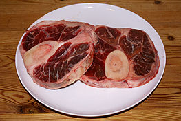

Time to get the ingredients
I'm really bad at this part
This dish's primary ingredient, veal shank, is common, relatively cheap, and flavorful. Although tough, braising makes it tender. The cut traditionally used for this dish comes from the top of the shin which has a higher proportion of bone to meat than other meaty cuts of veal. The shank is then cross-cut into sections about 3 cm thick. Although recipes vary, most start by browning the veal shanks in butter after dredging them in flour, while others recommend vegetable oil or lard. The braising liquid is usually a combination of white wine and meat broth flavored with vegetables.
